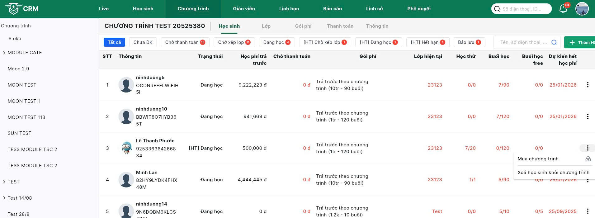

🔑 Đăng nhập
- Truy cập crm.armyenglish.edu.vn.
- Nhập Tên đăng nhập và Mật khẩu được cấp → bấm Đăng nhập.
- Bấm avatar góc phải → Chỉnh sửa thông tin cá nhân → cập nhật Email, Địa chỉ, Giới tính, Ảnh đại diện → Cập nhật.
📚 Tổng quan về trung tâm
🏫 1. Cài đặt trung tâm
- Avatar góc phải → Cài đặt trung tâm.
- Phòng học: Phòng học → nút + → nhập Tên phòng*, Số chỗ*, tích Active* → Tạo. Có thể sửa/xóa phòng sau khi tạo.
- Phòng ban & Nhân sự: Phòng ban → thêm phòng ban; tại phòng ban dùng nút + để thêm SĐT → tạo tài khoản → gán vào phòng ban và chức vụ. SĐT là định danh nhanh; cần duy nhất.
- Voucher: Xem các voucher đang dùng.

👩🏫 2. Thêm giáo viên
- Vào Giáo viên → Thêm.
- Nhập SĐT → thêm giáo viên vào.
- Gán giáo viên vào Trung tâm và phòng ban phù hợp.
- Phân công dạy lớp tại tab Lớp phụ trách (sau khi lớp được tạo).
- SĐT là định danh nhanh. Có thể nhập chứng chỉ/bằng cấp để phục vụ phân lớp.
📚 3. Tạo lớp
- Ở mỗi chương trình sẽ có phần tạo Category cho từng chương trình, sau khi tạo category thì ấn vào mục lớp học và tạo lớp.
- Điền thông tin lớp học:
– Tên lớp*, Chương trình*, Ngày bắt đầu dự kiến*, Ngày kết thúc dự kiến*.
– Giáo viên*, Học sinh tối đa, Nhân viên hỗ trợ lớp (nếu có).
– Avatar (tùy chọn).
– Bật Kích hoạt*.
– Chọn Danh mục*. - Bấm Tạo lớp học để hoàn tất.

🗓️ 4. Cài lịch học
- Tại tab Lịch học, bấm nút Tạo lịch học (góc phải) để mở hộp thoại.
- Trong hộp thoại: chọn Phòng học*, Buổi học* (thứ), Bắt đầu* và Kết thúc*.
- Muốn thêm 1 buổi/khung giờ nữa, bấm icon +.
- Bấm Cập nhật/Lưu → hệ thống tự động tạo lịch theo cấu hình.
- Hệ thống sẽ cảnh báo nếu trùng phòng/giáo viên.
- Sửa lịch học: ở mỗi dòng buổi học, bấm menu ⋮ (ba chấm) → chọn hành động (VD: Chỉnh sửa, Hủy lịch…).

SALES
➕ 1. Thêm học sinh vào trung tâm
Mỗi học sinh được gắn với Sale tạo ra. Sale đó thao tác các mục (check-in, làm test, lịch sử chăm sóc…). Quản lý trung tâm/team có thể xem nhưng không thao tác; các Sale khác không xem được.
1.1. Level
- Bên trái có danh sách Levels (L0 → L5) để chăm sóc theo 5 giai đoạn; có thể kết hợp lọc theo tag.
- Level cập nhật tiến từ L0 → L5 (không cập nhật lùi); có thể ghi nhiều lần chăm sóc trong cùng 1 level.

1.2. Tag
- Khu vực Tags dùng để gắn nhãn HS theo nhóm/chiến dịch/Sale.
- Mỗi Sale có thể tự tạo tag; tag do Sale nào tạo chỉ Sale đó thấy.
- Bấm icon bút để chọn/đổi tag; bấm Clear để bỏ lọc.
1.3. Thêm học sinh
- Bấm + Thêm học sinh (góc phải) để thêm thủ công; dùng + Tải file để thêm hàng loạt.
- Nhập SĐT (định danh). Nếu phụ huynh có nhiều con, có thể thêm hậu tố A/B/C… sau SĐT để tránh trùng.
- Điền thông tin (Tên, SĐT, nguồn, trung tâm…) rồi Lưu.
- Sau khi lưu, HS sẽ gắn với Sale đang thao tác.
📤 2. Upload danh sách
Tải file mẫu tại đây: Mẫu upload học sinh (Google Sheets).
- Mở file mẫu và điền dữ liệu theo cột. Các cột bắt buộc: Họ và tên, Ngày sinh, SĐT tạo tài khoản, lưu ý thêm 1 kí tự vào sau sđt của phụ huynh để phân biệt ( ví dụ có 1 con thì sđt + A, sđt+ B..). Các cột còn lại có thể để trống.
- Lưu ý định dạng: Tất cả cột trong file mẫu đang đặt là Text/Plain text (để không mất số 0 đầu số điện thoại, không tự đổi ngày-tháng). Không đổi sang Number/Date và không đổi định dạng file. Nên tải xuống/lưu dưới dạng .xlsx.
- Trên CRM → vào tab Học sinh → bấm + Tải file (góc phải).
- Trong hộp thoại:
– Chọn nhân viên (Sale): chọn đúng tên của bạn.
– (Tuỳ chọn) Tags.
– Chọn file để tải lên → chọn file .xlsx theo mẫu.
– Bấm Tải lên. - Sau khi tải, hệ thống kiểm tra dữ liệu. Nếu có lỗi, xem thông báo để sửa trong file rồi tải lại.

📈 Level & 3. Lịch sử chăm sóc
Nội dung…
🏷️ 4. Tag theo Sale
Nội dung…
🧪 5. Đăng ký học thử
Nội dung…
📚 6. Xếp lớp)
Nội dung…
💳 7. Nạp tiền khi đăng ký
Nội dung…
CM
🔁 1. Xếp/loại HS khỏi lớp/chương trình
Nội dung…
✏️ 2. Chỉnh sửa lớp học
Nội dung…
📆 3. Cài lịch học
- Tại tab Lịch học, bấm nút Sửa lịch học (góc phải) để mở hộp thoại.
- Trong hộp thoại: sửa Phòng học*, Buổi học* (thứ), Bắt đầu* và Kết thúc*.
- Muốn thêm 1 buổi/khung giờ nữa, bấm icon +.
- Bấm Cập nhật/Lưu → hệ thống tự động tạo lịch theo cấu hình.
- Hệ thống sẽ cảnh báo nếu trùng phòng/giáo viên.
- Sửa từng buổi lịch học: ở mỗi dòng buổi học, bấm menu ⋮ (ba chấm) → chọn hành động (VD: Chỉnh sửa, Hủy lịch…).
➕➖ 4. Thêm/xóa HS khỏi chương trình (CM)
4.1. Thêm học sinh vào chương trình
- Tại tab Học sinh của chương trình → bấm + Thêm học sinh.
- Tìm theo Tên/SĐT/ID → chọn học sinh.
- Chọn Gói phí (nếu áp dụng) và thông tin cần thiết → Lưu/Đăng ký.

4.2. Xóa học sinh khỏi chương trình
- Nếu HS đang ở trong lớp ➜ cần loại HS khỏi lớp trước. Thực hiện ở danh sách HS trong lớp, hoặc tại danh sách HS của chương trình → menu ⋮ của dòng lớp → chọn thao tác loại khỏi lớp.
- Sau khi HS đã rời lớp: tại tab Học sinh của chương trình → menu ⋮ ở dòng HS → Xóa học sinh khỏi chương trình.
- Xác nhận thao tác → hoàn tất.
